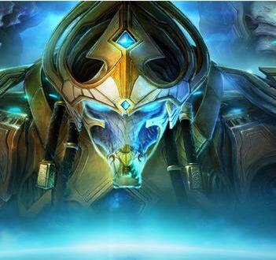

历代剧情
星际争霸系列共有两代，包括资料片总共5部作品，剧情前后连贯。
-

星际争霸1
1998年发布
游戏描述了26世纪初期，位于银河系中心的三个种族在科普卢星区中争夺霸权的故事。三个种族分别是：地球人的后裔人族（Terran）、一种进化迅速的生物群体异虫（Zerg），以及一支高度文明并具有心灵力量的远古种族星灵（Protoss）。
-
星际争霸1-血巢之战
1999年发布
《母巢之战》的剧情发生在《星际争霸》结束的两天之后。发生在银河系中心的科普卢星区。从地球流放出来的人族建立了数个政权，而自治联盟最终在一场公会战争中取得胜利。但此时地球上的国际组织地球联合理事会派出了一支远征舰队，意图扫清整个星区...
-
星际争霸2-自由之翼
2010年发布
《星际争霸II》的故事发生在《星际争霸：母巢之战》后的第四年。 吉姆·雷诺所领导的革命军一直在为推翻蒙斯克的帝国而进行战斗；然而一个昔日的伙伴——泰凯斯·芬利突然来访并且打乱了他的生活...
-
星际争霸2-虫群之心
2013年发布
《虫群之心》的游戏情节围绕虫族的首领刀锋女王凯瑞甘展开，在《自由之翼》的结尾，雷诺使用一个古老的萨尔那加神器终于击溃了异虫的进攻，将凯瑞甘恢复成人类；失去了领袖人物的异虫破裂为数个虫群分布在克普鲁星区上，一个异虫的寄生女王扎加拉更是想取代凯瑞甘成为新的首领。
-

星际争霸2-虚空之遗
2015年发布
当年主宰率领着异虫大军入侵了星灵母星-艾尔，迫使星灵放弃艾尔从此颠沛流离，然而星灵年轻大主教-亚坦尼斯费尽了千辛万苦终于集结了星灵黄金舰队准备反攻艾尔，不料就在进攻前夕，黑暗教长泽拉图前来警告亚坦尼斯，表示真正敌人堕落萨尔那加-埃蒙即将回归...